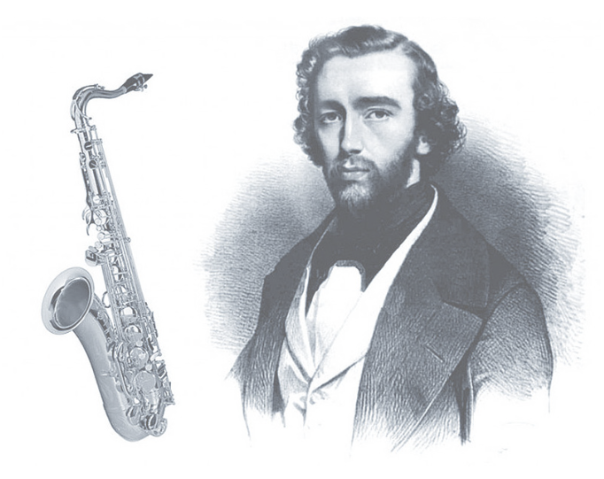

A História do Sax
O Saxofone é um instrumento cujo criação não tinha precedentes, uma vez que não se origina de outro instrumento mais antigo.
Foi criado por um criativo Luthier belga de nome Adolph Sax em 1840 aproximadamente.
O instrumento teve sua primeria exibição em 1844, na Paris Industrial Exibicion, chamando a atenção de todos pela sua bela e exótica sonoridade.
No mesmo ano foi criada a primeira obra original para saxofone "Opera Laster King of Judá"
("O Último Rei de Judá") e o instrumento foi inserido na orquestra de George Kastner (Conservatório de Paris).
Contudo o saxofone só fora patenteado mais tarde (1846).
